Excellent Leg Strength
I woke up with a headache. It was a mild cold caused by the combination
of the cold night temperature and the moisture trapped inside the tent.
I should be able to recover after sunbathing.
The positive way to see it was there was no need to pack my sleeping bag after getting out of bed.
The lazy plan made me feel relaxed.
I felt like sponge cleaning my face before I set off, however only juice and brown sugar water were in my bottles.
Those were not good for face washing.
I used the damp towel which I had already used to clean my body yesterday to roughly wipe my face,
then my washing routine in the morning was done –
kids who do not like washing and brushing their teeth after getting out of bed can follow me!
I had a choice to make after I left the campsite under the bridge.
Should I return to the rest area where I passed by yesterday and look for a restaurant to eat and get washed at,
or should I continue on till the next rest area showed up?
I picked out the later simply because I had to ride uphill if I went back, which upset me just by thinking about it.
If I moved on, the road sign said the next city was 49 km away.
The road sign showed the position of the next city not the next rest area, that was for reference.
I had nothing to say if I would be out of luck and could not wash up till noon.
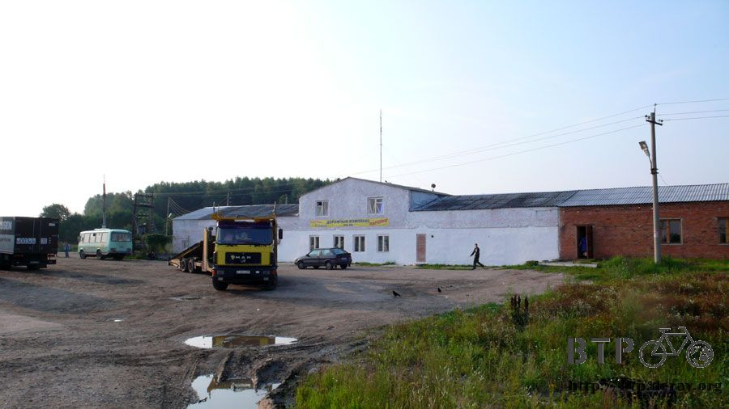
As expected, about 7 km down the road, I spotted a rest area with many trucks parking along the road.
The signboards for car repair and car wash were all over.
There was only one brick structure with no signboard but decorated with holiday lights. I guessed it must be a restaurant.
This was what I saw after getting in:
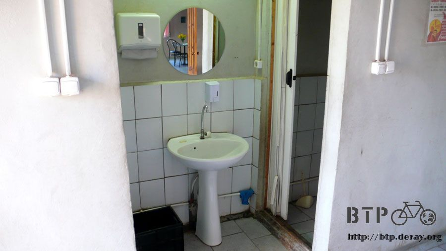
What did you see? It was a sink, right?
I saw a sink too! This sink was invaluable to me – free and priceless
Taking advantage of fewer customers visiting the restaurant, I took a sponge bath with a towel.
I had been just doing sponge baths these days which were comfortable and convenient compared to a shower
My shirt, which was wet with sweat, was water-washed as well.
Shirt, bandanas and towel were line-dried on the rope which was used to hold the entrance door open.
They should dry up after a meal.
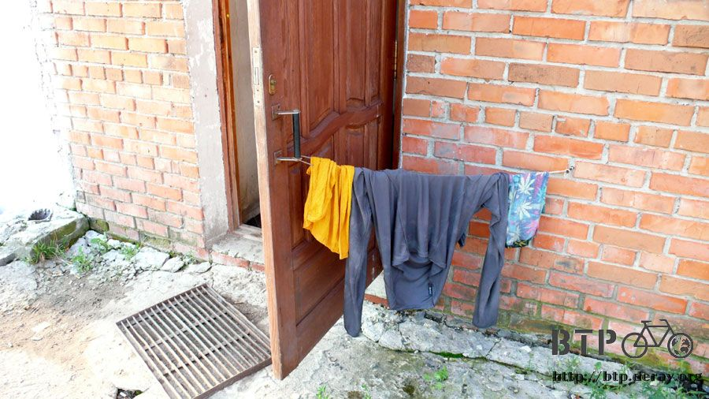
The store with no signboard was really a restaurant where I heartily ate some hot food.
Some customer ordered a plate of yummy-looking food. I followed and ordered the same thing as well.
At the cashier, I found the price was unusually cheap.
Meat was not cheap in Russia, a steak was usually more than 50 RUB,
and a grilled kebab was about 150 RUB, which was an upscale price.
I had got the hang of food ordering: starting with a main dish, such as BBQ or chicken drum sticks,
followed by side dishes, such as mashed potato or pasta, salad, bread, coffee and desert. That made a meal.
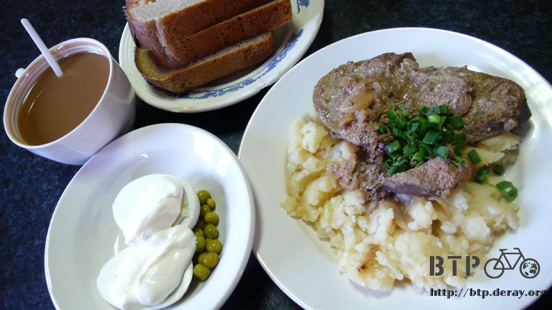
Today, I had a large steak, smooth mouth feeling mashed potato, a hard-boiled egg with pea salad,
a large coffee and five pieces of bread. The total was only 68 RUB, about half the price of other restaurants.
After the first bite of the meat I realized why it was so cheap, it was not beef steak but something like beef liver.
I always used lots of seasoning with my food, such as black pepper or salt,
since I sweated a lot when biking, and the only chance to replenish sodium was eating at a restaurant.
After eating and writing up my travel log, it was close to noon when I left the restaurant. Even though I got up early every day,
it was always close to noon when I started biking – time flies.
All of sudden, more fruit and vegetable stalls appeared along the roadside since farm houses were by the road.
Every family had apple trees in their yard; they could start a business just with a chair and buckets of apples in front of their homes.
In addition to apples, a variety of fruit and vegetables were also for sale.
I stopped and thought what to buy for snacks on the road.
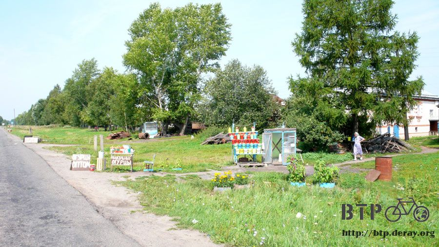
A granny saw me and gave me a friendly greeting.
She asked where I was heading for and then bagged me three cucumbers and four apples.
When I was paying, the granny said they were gift – free of charge, if I needed more I could have more.
What a good-hearted granny. What she picked out for me were all good-looking apples. The cumbers also looked yummy.
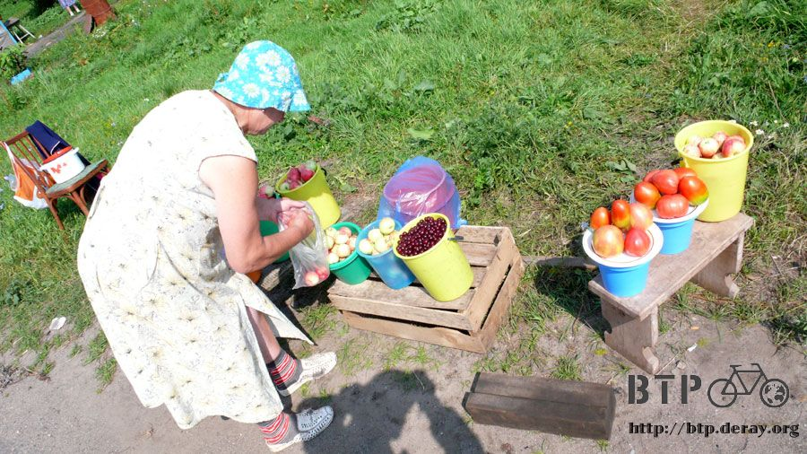
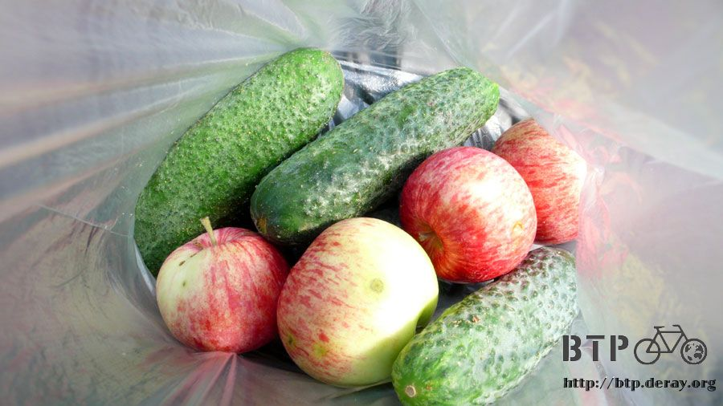
When I picked up a cucumber to eat, the granny stopped me and took the whole bag back because they needed washing first.
Then she carefully washed them for me in a bucket of water.
I took a big bite of the cucumber, crispy and sweet, juicy and thirst quenching. It was a blessing to receive such wonderful gifts.
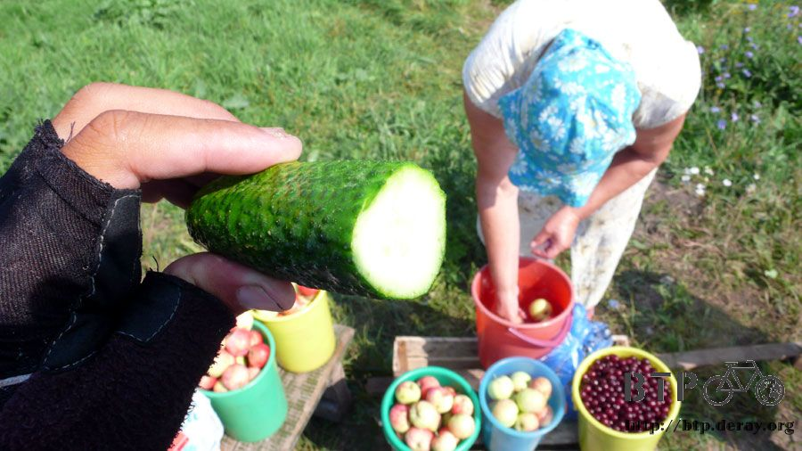
Eating cucumbers reminded me of the old days, like opening up a window to a memory.
As a child, I ate raw cucumbers as snacks, but did not do it after growing up.
Fruits and vegetables were inexpensive in China,
meat is relatively cheap in Kazakhstan, and both are expensive in Russia except for wheat products.
What satisfied me most was the price of bread, cookies and cakes,
and they became the food that I purchased the most frequently.
The harvested wheat fields became dry and brown. Where were the wheat straws shipped to?
Without the hay bales in the fields, the enormous land looked differently.
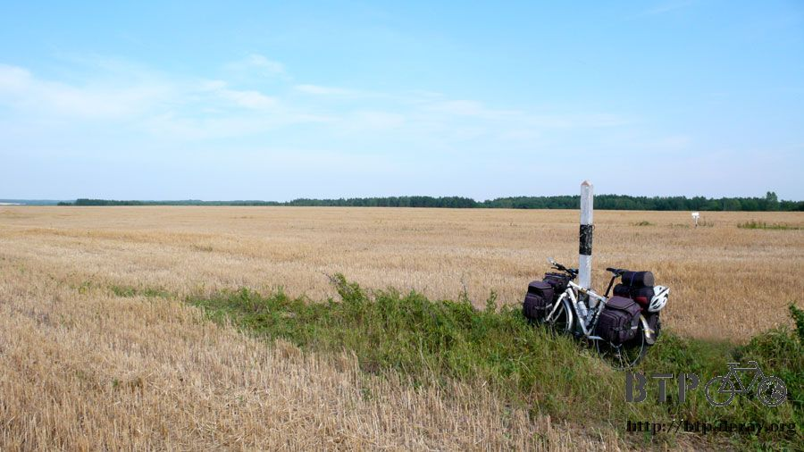
Then it was a whole day bike ride. Please allow me to fast forward and skip past a rather boring ride.
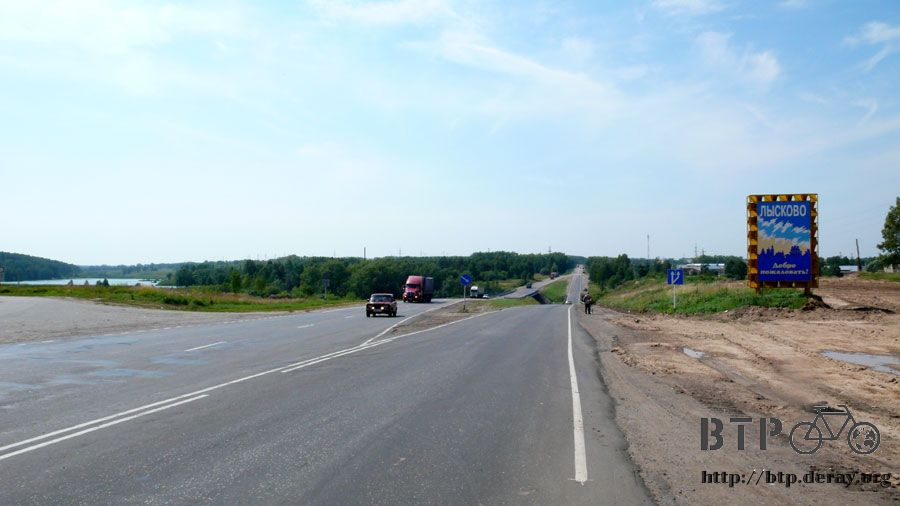
At 6:00pm, I went to a shop with a sink and washed up again.
It was all uphill along the way, so my clothes were dripping with sweat again.
The sink was outside. I washed my face and wiped my body with a towel.
If I could find a place like here to clean up a couple of times every day, there was no need to stay in a hotel.
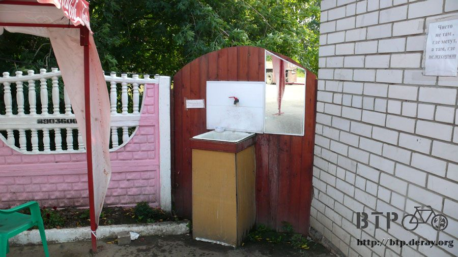
The washed clothes were hung over a rod for drying and were billowing in the strong wind. Half an hour later,
they were almost dry. It was quite cool to ride in still damp clothes.
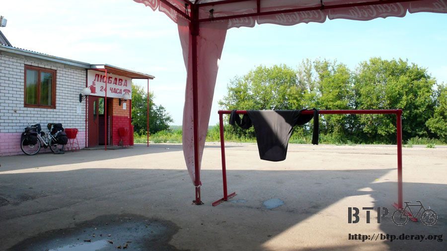
I bought a soda in the shop, sat by the door watching the high wind, and ate the bread I bought yesterday for dinner.
(Please do not ask me to represent a product while seeing me drinking the product. I do not have that kind of charisma)
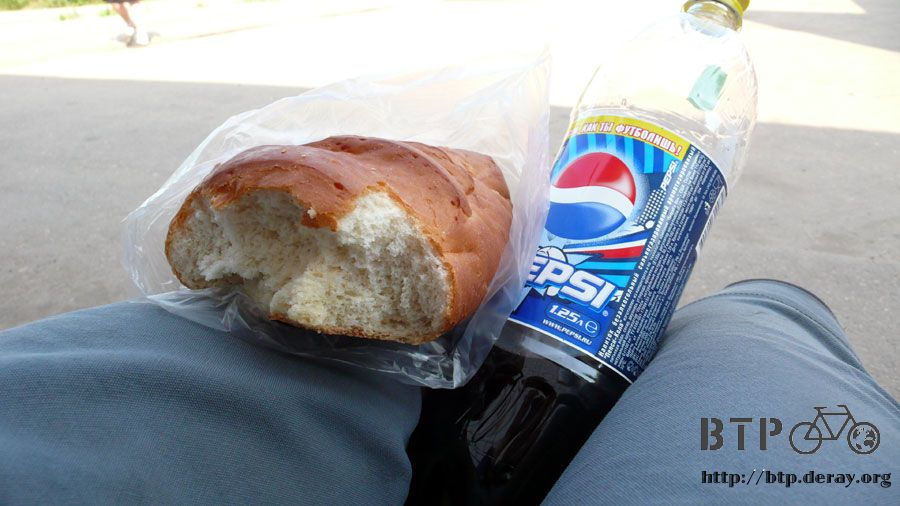
After rinsing my empty beverage bottles, I filled them up with tap water,
and then I would have water to drink at night or to wash up if camping.
It was very important to wash water bottles. They used to be filled with water,
but now they were filled with a variety of beverages.
If I did not thoroughly clean them out after every use, the water would taste weird.
The bread went well with the water. When I was eating, a young man walked toward me - a backpacker.
He carried a backpack which looked quite heavy and wore a cap.
Sweat dripped from his face. He was all wet with sweat like I was.
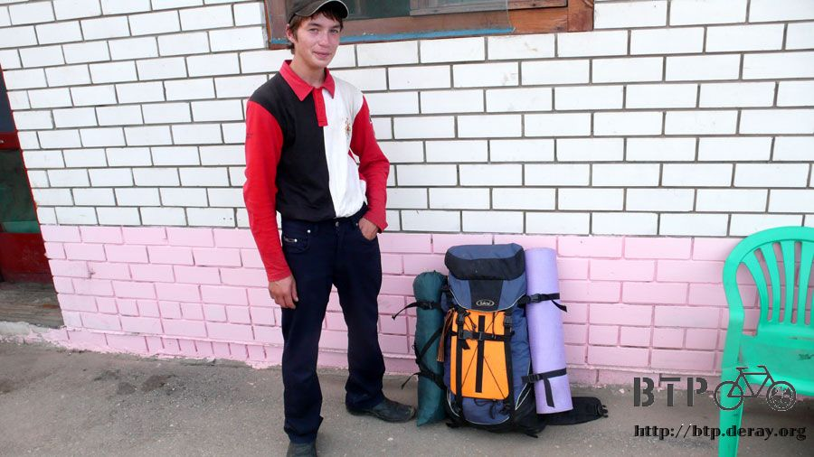
Bumping into such an interesting person, I wanted to chat with him.
It was alright that we did not speak the same language, I could make conversation – the Russian version atlas,
a pen and a piece of paper would do the trick.
His name is Marty, 20 years old, a Russian doing an unbelievable journey– crossing Russia by foot.
The trip from west to east is about 3,500 km estimated by Marty. He set out on 6/15/2007, today was his day 50.
According to the distance he had completed and the days he had spent, he did travel on foot, and did not hitchhike at all.
His backpack was exceptionally heavy. I tried it out and would say it was between 25 kg and 30 kg.
He stayed wherever he had reached and camped everyday.
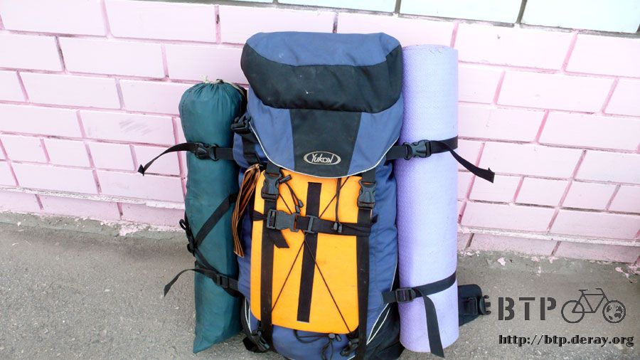
The reason I decided to travel by bike was not only it was eco-friendly, but also it was rather easy.
If it was not necessary, most of the bags were packed on Dido.
The travel speed on bike is also 4 to 5 times faster than on foot and biking is relatively less difficult.
I could only tour in a city on foot for half a day, then my legs started feeling tired,
and I regretted not touring on Dido to make it easier.
I respected Marty’s heroic deed, crossing Russia on foot,
with all my heart. He was young and thin, but he did not look pampered at all.
You go Marty, I admire you.
No matter how long your journey would be, I believed you would make it to your destination one day.
After finishing up the bread and the soda, I hit the road again when the sky became heavy cloudy.
It was very likely to rain again. I’d better ride out of the mountain area as soon as possible.
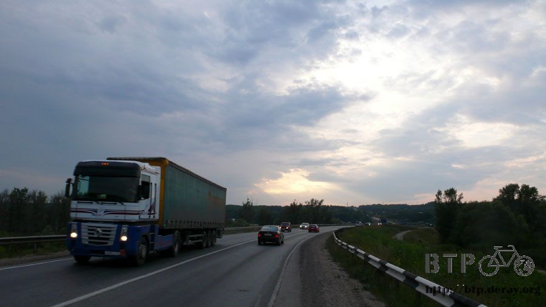
This section of road was newly paved, and the left over gravel and asphalt were all over.
When cars went by, it was not water or dust that sprayed out from them but the bullet like asphalt.
I caught the “attack” on my legs one after another – it hurt big time!
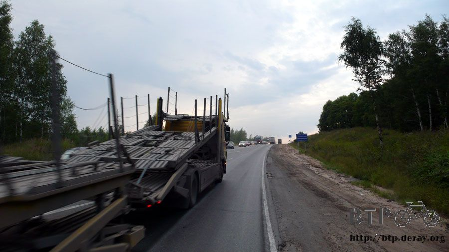
Stuff like that could break windshields, my legs must have quite a few bruises.
A unusual traffic jam occurred. The traffic was heavy in the direction leading out of town.
It was like everybody was fleeing away from the city.
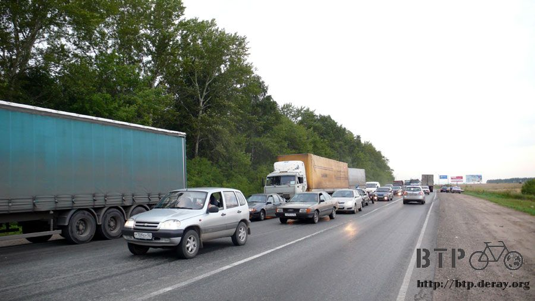
As expected, as approaching the city the roadways were getting complicated.
I just wanted to ride along M7 but it was inevitable that I had to ride into the complicated roadway network.
The roundabout ahead could lead off in all directions. Which one would lead into Moscow?
I had been following the road sign pointing to Moscow. All of sudden, it disappeared.
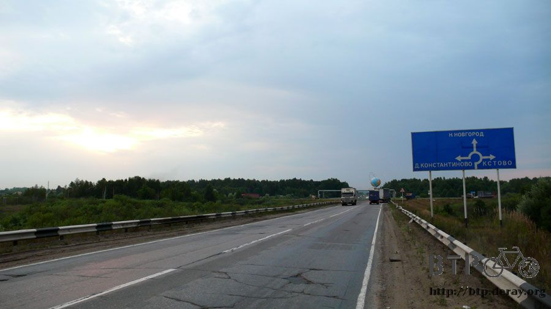
Perhaps every direction led to Moscow eventually, so there was no need to sign it.
I chose to ride toward north.I got into the city around 9:00pm and felt a bit troubled.
If it was possible, I always liked to enter cities in daytime, wandering around and then getting out of the cities,
and then slept in the suburbs where public safety was better and prices were cheaper.
With that said, I could not help but feel a headache when getting into a city at night.
I wanted to find a place to sleep before entering the city. Even though some spots were found, they were not good for camping.
I kept moving toward the city.
This city had oil fields. Oil pipes, chimneys with flame and black smoke were visible all over the place.
It was getting dark. Continuing on was not a good idea,
so I left the main road and pulled into a small town. It was time for bed.
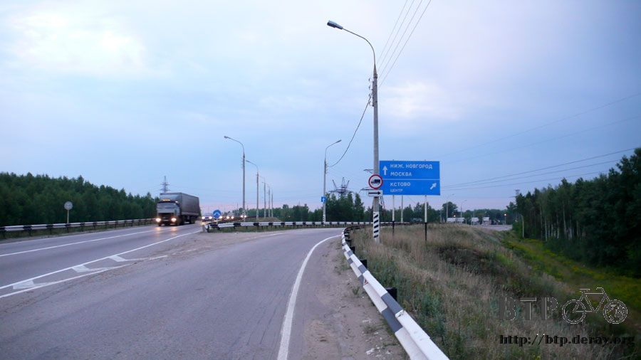
I was 100% sure that it would rain. It was easier to find a place with roof in a city than in a field.
Getting off the main road and getting on a small street,
I was expecting to discover a place to sleep before it was dark and started to rain.
Luckily, there was a ruined building seemingly torn halfway down and pretty battered, but the roof was not torn down yet.
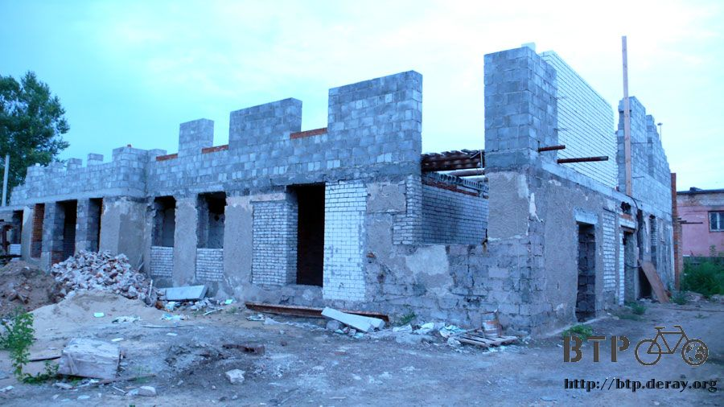
I came and checked its condition, it had what ruins were supposed to have:
no pavement, dirt floor, battered wall, no window and no door.
No empty alcohol bottles and not much garbage were in sight.
That implied this place was not a venue for a drinking party and should be safe for staying overnight.
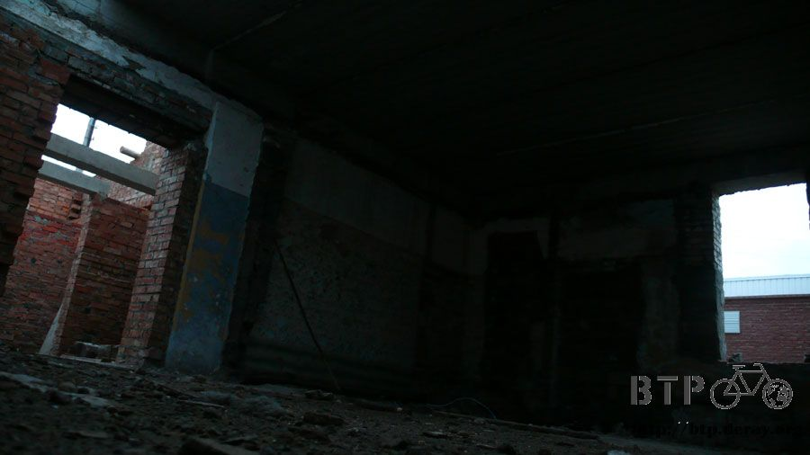
The wall could block the wind and it was not spacious,
so I did not want to unpack my sleeping bag tonight, it was not that cold.
Unfolding the inflatable mat, setting up my tent,
I was ready to sleep using the packed sleeping bag as my pillow and thick clothes as my comforter.
Before getting into bed, I took a sponge bath with a towel and the water in the water bottle.
I drank half a bottle of water before I wiped my body.
Today’s situation was better than yesterday’s. At least I was able to clean my body before sleep.
Despite the camping site being pretty rundown, it was a “house”.
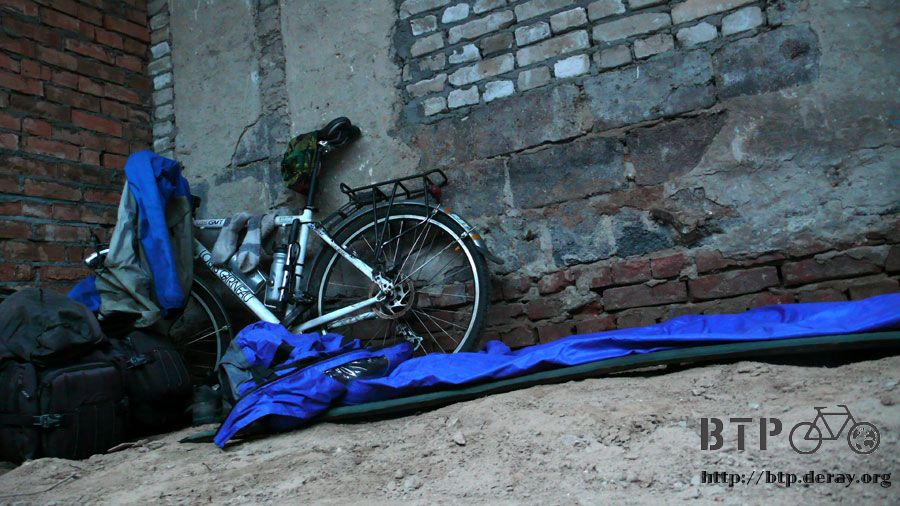
As predicted, it rained very hard around midnight, and the sound of the rain drops was intimidating.
The camping site had a roof and was elevated from the ground around it, so I did not worry about flooding.
What a relief to find a place like here to spend the night. I wondered where Marty spent his night.
Was he troubled by rain or did he fall asleep by listening to the rain?
I gave Dido a clap before sleep. During one of today’s out of breathe uphill ride, the total distance broke through the 10,000 km barrier.
Fantastic, Dido buddy, you had excellent leg strength as well.